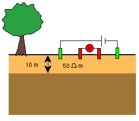
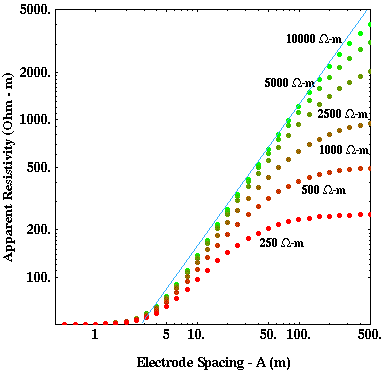

Apparent Resistivity Curves for One-Layered Media: Part 2
 Now consider the apparent resistivity curves generated over a one-layered medium in which the resistivity of the upper layer is less than the resistivity of the halfspace. An example of this type of structure is shown to the right. A 10-meter thick, 50 ohm-m layer overlies a halfspace that has a resistivity that is always greater than 50 ohm-m.
Shown below are apparent resistivity curves computed assuming various values of resistivity for the halfspace (250, 500, 1000, 2500, 5000, 10000 ohm-m). This example is not quite as simple as the previous example. As before, all of the curves asymptotically approach the resistivity of the upper, 50 ohm-m layer at small electrode spacings. At large electrode spacings, however, the behavior is a bit more complex. If the resistivity of the halfspace is not too much larger than the resistivity of the upper layer, then the apparent resistivity does asymptotically approach the resistivity of the halfspace at obtainable electrode spacings. As the resistivity of the halfspace increases, however, the asymptotic behavior of the apparent resistivity curve manifests itself only at larger and larger electrode spacings.

In this example, notice that over the electrode spacing range considered (0.5 to 500 meters), the apparent resistivity curve never approaches the resistivity of the halfspace for halfspace resistivities above 2500 ohm-m. Instead, the apparent resistivity curve approaches a straight line having a slope of 45 degrees (blue line). Also notice that for relatively small halfspace resistivities, again like the previous case, the electrode spacing where the greatest change in apparent resistivity with electrode spacing (slope) is approximately equal to the thickness of the layer. As the resistivity of the halfspace increases, however, the electrode spacing where we observe the greatest change in apparent resistivity moves to distances larger than the depth of the layer.
Resistivity
- Current Flow and Ohm's Law pg 4
- The Fund. Electrical Property is Resistivity, NOT Resistance pg 5
- Resistivities for Common Earth Materialspg 6
- Current Density and Electric Fieldpg 7
- A First Estimate of Resistivitypg 8
- Current Flow From Two Closely Spaced Electrodespg 9
- A Practical Way of Measuring Resistivity pg 10
- Sources of Noise pg 11
- Depth of Current Penetration V.S. Current ElectrodeSpacing pg 12
- Current Flow in Layered Media pg 13
- Variation in Apparent Resistivity: Layered Versus Homogeneous Media pg 14
- Current Flow in Layered Media Versus Electrode Spacing pg 15
- A Second Example of Current Flow in Layered Mediapg 16